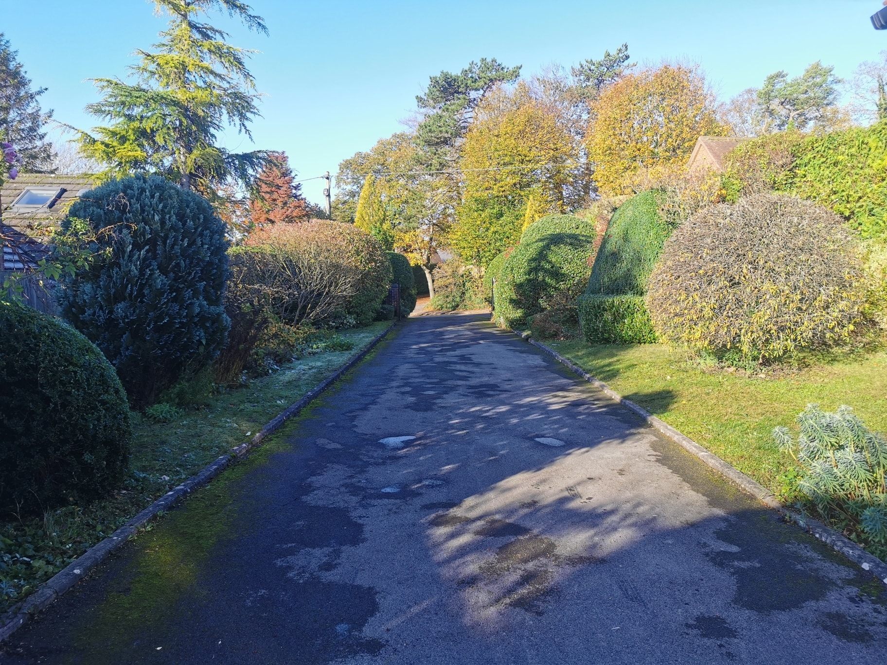
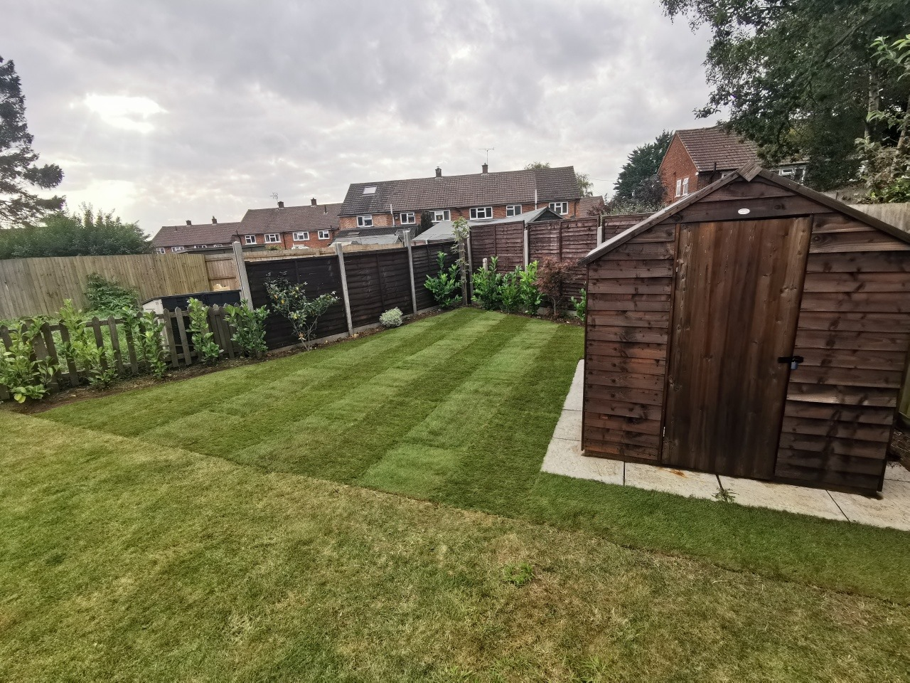

Projects by Barton Garden Services
We are pleased to showcase some of our recent projects
From general garden maintenance to landscaping projects - no job is too small, so contact Will Barton today to discuss options.

